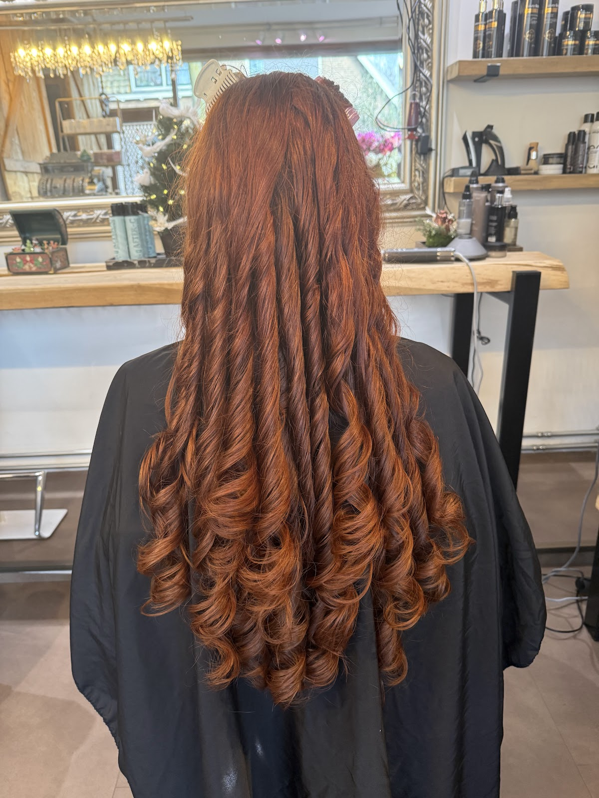
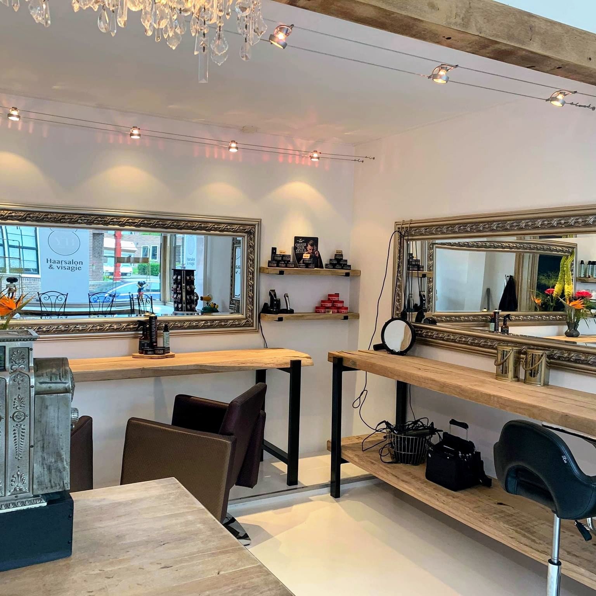
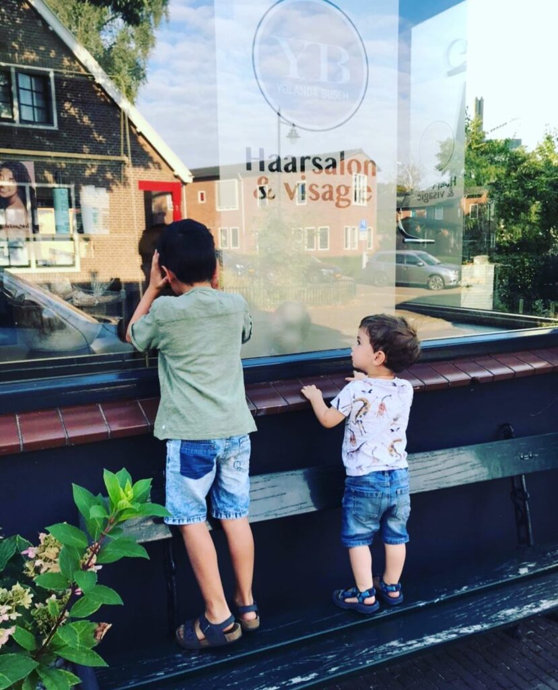
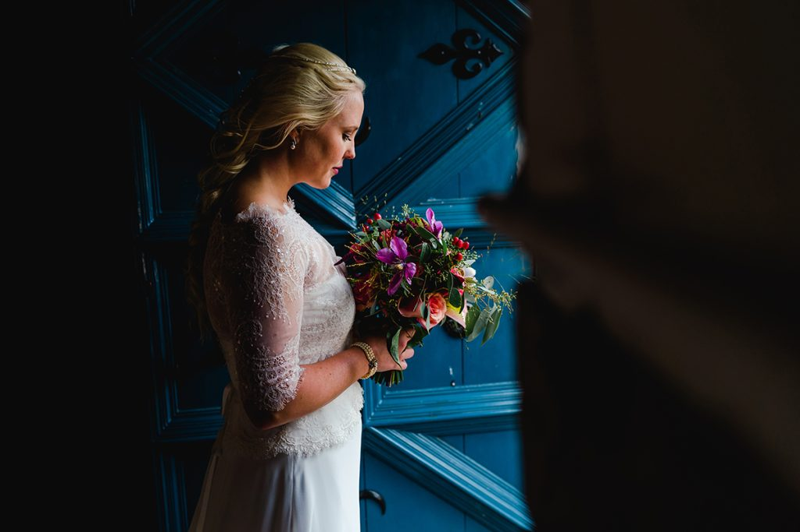
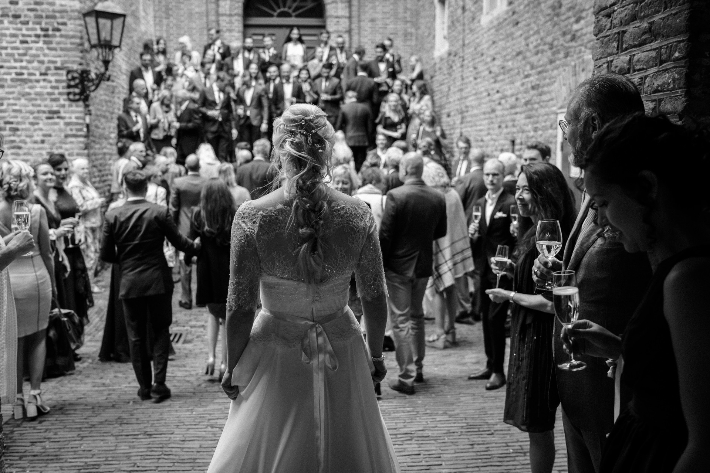
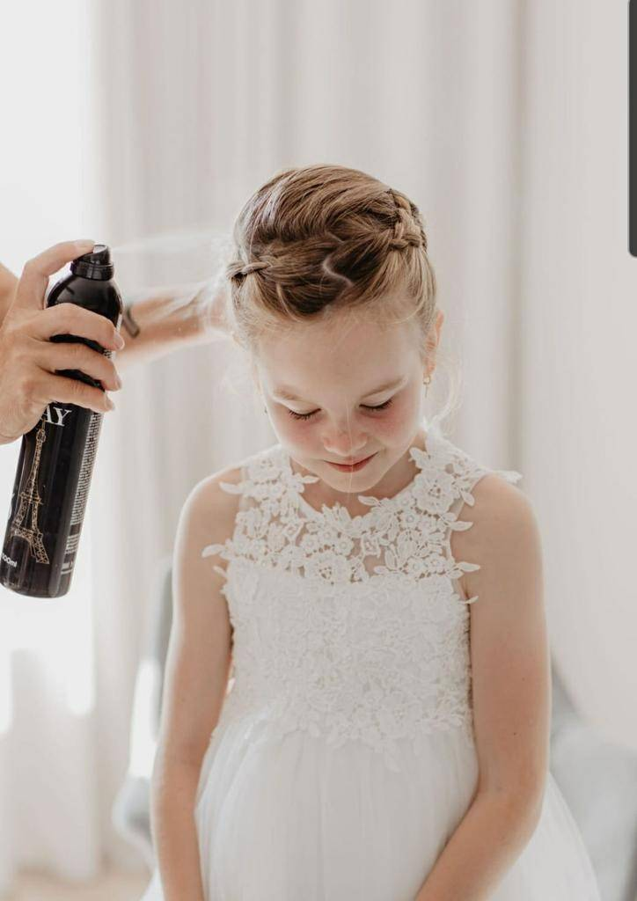
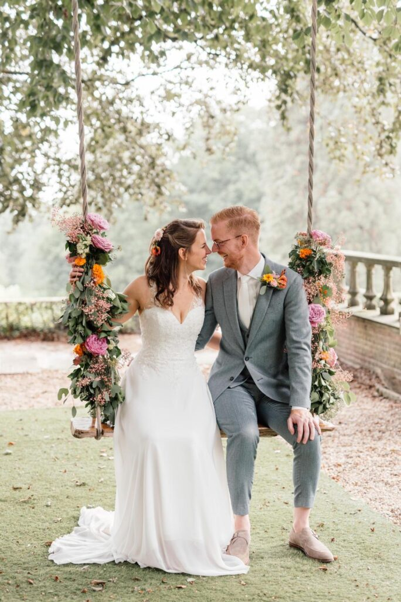
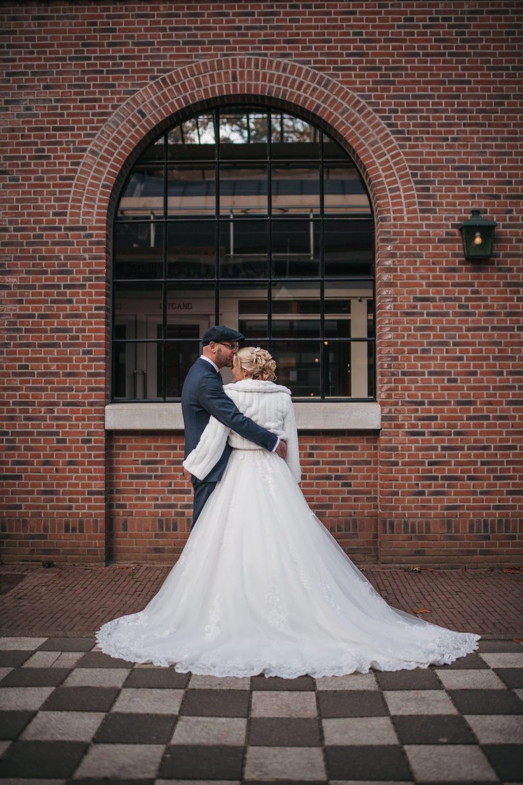
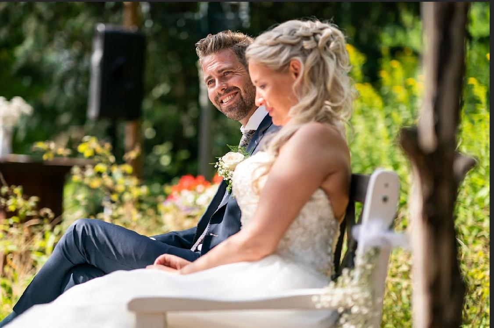

Haarsalon & visagie in Klarendal
Haar dat bij je past.
Ik ben Yolanda Busch, kapper en visagist aan de Klarendalseweg in Arnhem. Ik luister eerst, geef eerlijk advies en knip zo dat je haar ook thuis goed valt. Voor je gewone knipbeurt, voor je krullen en voor je trouwdag.
- Open
- ma t/m za
09:00 tot 17:00 - Adres
- Klarendalseweg 299
Arnhem - 5,0 sterren
96 reviews

Twee soorten afspraken, één kapper.

Een kleine salon met grote spiegels.
Twee stoelen, eikenhout, een kroonluchter en een oude kassa bij de deur. Gezellig en ontspannen, met tijd voor een praatje. Je wordt hier geholpen door mij.
Met meer dan 30 jaar ervaring weet ik wat jouw haar wel en niet wil. Krullen? Die knip ik zo dat ze tot hun recht komen, zonder de hoofdprijs van een krullenkapper. En kinderen zijn altijd welkom.

| ma t/m za | 09:00 tot 17:00 |
| zondag | gesloten |

Op je trouwdag zit alles al een keer goed.
Kapsel en make-up voor de bruid, elegant en persoonlijk. We proberen alles eerst uit, zodat er op de dag zelf geen verrassingen zijn.
-
1
Kennismaking
We bespreken je jurk, je haar en wat je mooi vindt. Ik neem de tijd om goed te luisteren.
-
2
Proefsessie, 5 weken vooraf
Een proefsessie duurt 1 tot 2 uur. Meestal is één keer genoeg. Is er meer nodig, dan plannen we een extra sessie.
-
3
De trouwdag
Op de dag zelf ben je 1,5 tot 2 uur bij me, afhankelijk van kapsel en make-up. Make-up kun je altijd aan je pakket toevoegen.
Bruiden van de afgelopen jaren





5,0
gemiddeld uit 96 Google-reviews
"Het is haar gelukt wat mijn vorige kapper niet voor elkaar heeft gekregen: mijn natuurlijke krul komt eindelijk prachtig tot zijn recht."
"Fijne kapster die goed luistert naar wat de klant wil. Mijn haar zit beter dan bij andere kappers in Arnhem waar ik geweest ben."
"Onlangs heb ik mijn haar en make-up voor mijn bruiloft laten doen door Yolanda. Vanaf het allereerste moment had ik alle vertrouwen in haar! Wat een geweldig persoon! Enorm kundig, creatief en professioneel."
"Ik ben al vaak bij Yolanda geweest. De sfeer is altijd super prettig en ontspannen, je voelt je meteen welkom. Ze luistert naar wat je wilt, en het resultaat is top! Yolanda heeft aandacht voor detail en geeft eerlijk advies. Echt een aanrader!"
"Yolanda is professioneel en heeft veel ervaring. Voor mijn bruiloft heeft ze mijn haar opgestoken en daar was ik heel blij mee! Het zat de hele dag goed. Sindsdien komt ik bij haar terug om mijn haar te laten knippen en ik ben altijd tevreden."
"heel fijne kapsalon. kan hier terecht met mijn krulhaar zonder de hoofdprijs van een krullenkapper te betalen. altijd gezellig en heel kindvriendelijk."
"Yolanda heeft mijn haar zo mooi gedaan. Ik moest het proces vertrouwen en het resultaat was geweldig! Ik raad haar 100% aan 🫶🏼"
Vragen die bruiden vaak stellen
Wat is jouw stijl?+
Elegant en persoonlijk. Samen maken we een look die jouw natuurlijke schoonheid laat zien en past bij je trouwdag, met mijn eigen inbreng waar dat helpt.
Hoeveel proefsessies zijn er inbegrepen?+
Meestal is één uitgebreide proefsessie genoeg. Daarin bespreken we je wensen en proberen we ze uit. Is er meer nodig, dan plannen we een extra sessie.
Hoe lang duurt de styling op de trouwdag?+
Doorgaans 1,5 tot 2 uur. Dat hangt af van het kapsel en de make-up die je kiest.
Kan ik make-up toevoegen aan mijn pakket?+
Ja, dat kan altijd. Er zijn verschillende opties, zodat je op je grote dag helemaal klaar bent.
Kom langs aan de Klarendalseweg.
Bellen is het snelst voor een knipafspraak. Voor een bruidskapsel mag je ook mailen, zet je trouwdatum er dan bij.
- Telefoon
- 06 22039843
- info@yolandabusch.nl
- Adres
- Klarendalseweg 299
6822 GM Arnhem
Route in Google Maps - Open
- maandag t/m zaterdag 09:00 tot 17:00
zondag gesloten